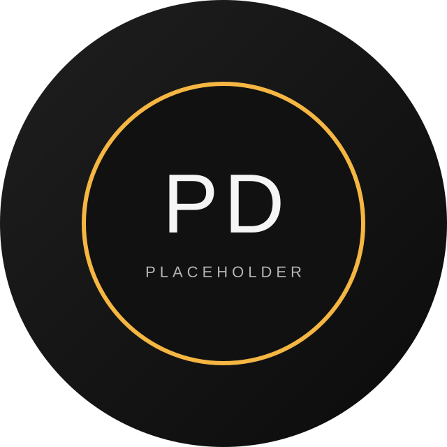

Campus Navigator
Web appDirectional web experience for SFU students with route planning, building info, and accessibility insights.
- Interactive map + search flow
- Responsive UI for mobile use
- Data pipeline for updates
Software • Systems • Story
I’m Pritam, a CS student at Simon Fraser University focused on building high-quality software that feels intuitive from the first click. I care about clean architecture, smart automation, and experiences that make people feel confident.

A few projects that reflect how I think: clean systems, careful UI, and purposeful details.
Directional web experience for SFU students with route planning, building info, and accessibility insights.
Guided resume builder that balances clean design with smart content suggestions and versioning.
CLI-driven automation utilities that reduce repetitive setup time for student teams.
I blend engineering fundamentals with a sharp eye for detail and a preference for maintainable systems.
JavaScript, TypeScript, Python, Java, SQL, REST APIs
UX research, prototyping, accessibility, design systems
React, Node, Figma, GitHub, Vercel, Postman
Reach out for internships, collaborations, or just to say hello. I’m quick to respond and easy to work with.